#1 · 5340 建榮2026-11-09 09:00 → 11-10 09:00
+4.00%
entry 91.20 stop 86.64 (−4.56) target 94.85 exit 94.85 target +3.65 破底 74.80 @ 11-06 09:00 站回 11-09 09:00 MA5 85.50 / MA10 84.85 / MA20 86.66 fwd +1d -2.30% +3d +5.70% +5d —
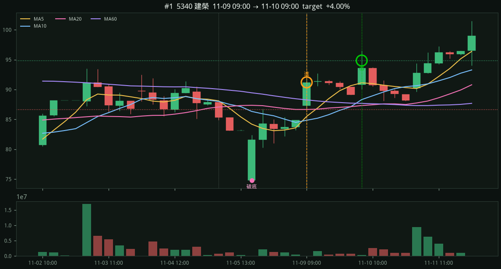
2026-10-30～2026-11-12 · 成交額前100、收盤>MA5/10/20/60、K棒收高≥65%、加權5根≥0、0.8R、停損最多5% · Yahoo 6mo 1h · 股價<1000 · 基準日 20261112 · 100 檔 · 成交額末名約 14.5 億
interval=60m 一小時 K；時區 Asia/Taipei。
_chart_payload_to_df 再套 session_mask：只留 09:00–13:30（含）正規盤，
includePrePost=false，試搓／盤前集合競價不進資料。price_cap）。sma）。熱身 max(20, lookback=16) 根後才開始找跌破。close ≥ MA20 且當根 close < MA20。close ≤ MA20 計入 bars_below，須 6 ≤ bars_below ≤ 36。
超過 36 根仍未成波 → timeout。搜尋跨度 max_below + max_fakes = 36。max_fakes=0。未達成波條件就收盤站上 MA20，計一次假站；超過則失敗
（太短／不夠深／非 16 根新低／假站過多）。close > MA20 才算站回。同時要
深度 (過程最高 MA20 − 波谷低) / 過程最高 MA20 ≥ 3.5%，
且波谷低 < 前 16 根最低價（16 根新低；波谷 index < 16 直接否決）。separate_trough=True，進場根不可等於波谷根（排除單根錘）。close > MA5 且 close > MA10 且 close > MA20 且 close > MA60（季線級生命線之上，排除空頭段死貓跳）。
彈回 close / 波谷低 − 1 ≥ 3.0%。 且該根收盤位置 (close − low) / (high − low) ≥ 65%（上影線不超過 35%；若第一根留長上影倒貨則整波放棄不追）。
本回測模式：元晶型預設（未加 --strict）；require_stack=False
（True 才再要求 MA5>MA10>MA20）。^TWII 同一根 1h。
過去 5 根報酬 close / close.shift(5) − 1 ≥ 0 才留。
對不到同一根，或加權這段在跌，這筆不進。用的是同一根收盤，沒有看到之後的 K。Signal.entry_price = close[e]）。wave.trough_low。若進場價 − 停損 ≤ 0，改用進場價 × 0.99。
若這樣離進場仍超過 5%，停損改收在進場價下方 5%（stop_cap）。
進場後每一根先看 low ≤ 停損，打到則以停損價出場（stop）。進場價 + 0.8 × (進場價 − 停損)（0.8R）。同一根停損沒打到才看
high ≥ 停利，打到則以停利價出場（target）。time）。
若資料已到最後一根且尚未滿 20 根，以最後收盤標記未平（open）。pnl_pct = 出場價 / 進場價 − 1。未扣手續費、交易稅、滑價。加總％是各筆相加，不是組合複利。報酬未扣手續費與交易稅。圖：橘圈「進」＝進場；綠圈「出」＝獲利出場、紅圈「出」＝虧損出場；粉點＝破底；黃／藍／粉／紫線＝MA5／MA10／MA20／MA60；紅點橫線＝停損；綠點橫線＝停利。
漏斗：跌破 2629 → 成波 938 → 進場 571
· 太短 1287 · 不夠深 92 · 非破底 136
· 假站過多 0 · 逾時 176 · 沒站上均線 0
· 同根錘 0 · 彈太弱 40 · 壓在 MA60 下 135 · 長上影 192 · 進場價過高 0
· 大盤在跌 11 · 對不到加權 0
出場：停利 20 · 停損 5 · 時間 0 · 未平 6
· 收盤後 +1d -1.40% · +3d +4.44% · +5d —
最好一筆：5340 建榮 2026-11-09 09:00 +4.00%
最差一筆：4526 東台 2026-11-10 09:00 -5.00%
entry 91.20 stop 86.64 (−4.56) target 94.85 exit 94.85 target +3.65 破底 74.80 @ 11-06 09:00 站回 11-09 09:00 MA5 85.50 / MA10 84.85 / MA20 86.66 fwd +1d -2.30% +3d +5.70% +5d —

entry 178.50 stop 169.57 (−8.93) target 185.64 exit 185.64 target +7.14 破底 158.50 @ 11-06 11:00 站回 11-09 09:00 MA5 166.90 / MA10 172.35 / MA20 172.85 fwd +1d +0.28% +3d +3.92% +5d —
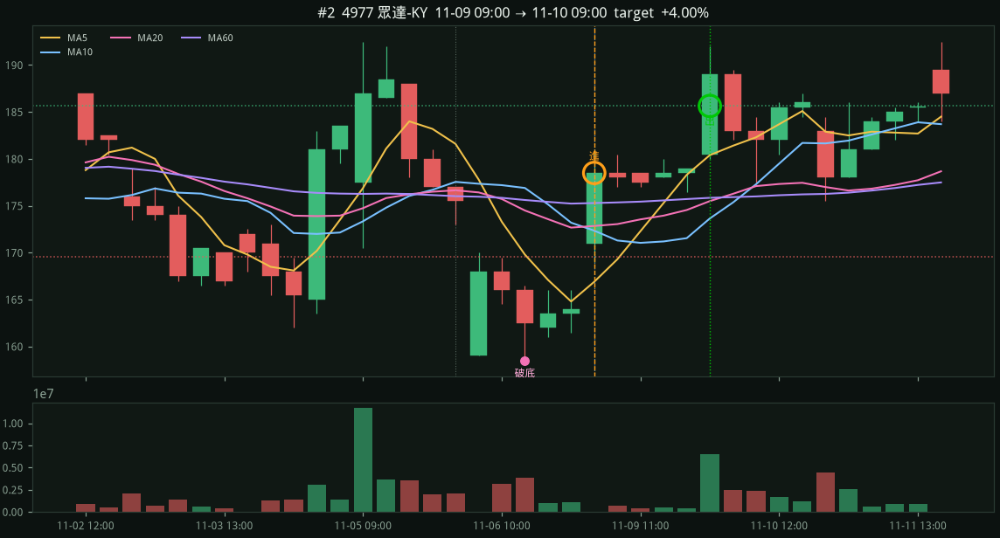
entry 289.00 stop 274.55 (−14.45) target 300.56 exit 300.56 target +11.56 破底 224.50 @ 11-06 09:00 站回 11-09 09:00 MA5 268.20 / MA10 257.45 / MA20 257.38 fwd +1d +0.00% +3d +1.38% +5d —
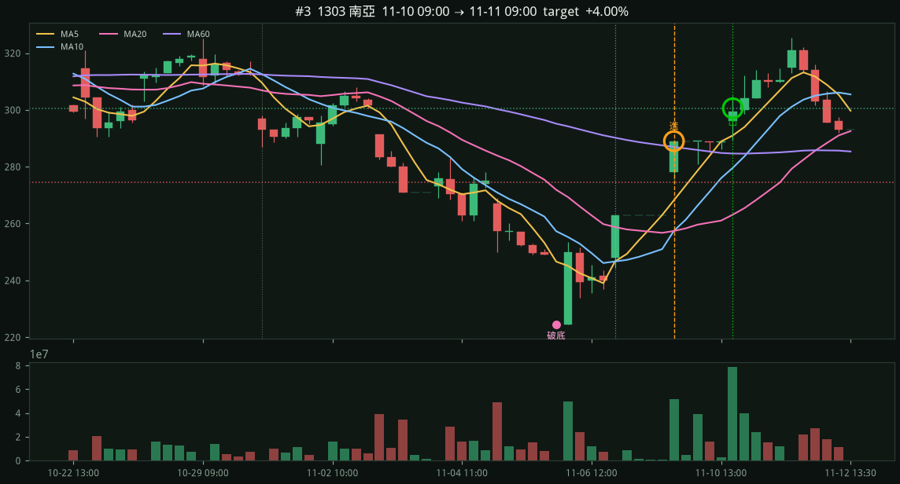
entry 69.80 stop 66.31 (−3.49) target 72.59 exit 72.59 target +2.79 破底 54.10 @ 11-06 09:00 站回 11-09 09:00 MA5 64.76 / MA10 61.88 / MA20 61.98 fwd +1d +0.00% +3d +17.05% +5d —
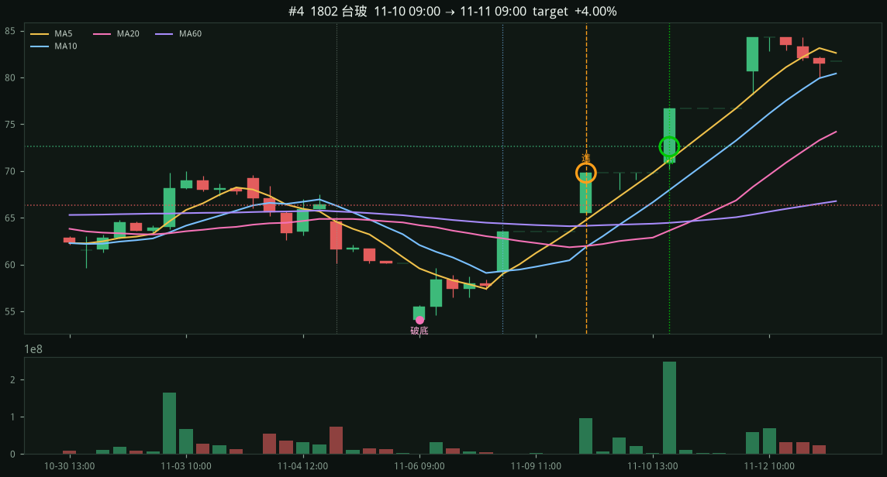
entry 59.60 stop 56.62 (−2.98) target 61.98 exit 56.62 stop -2.98 破底 49.05 @ 11-06 09:00 站回 11-10 09:00 MA5 55.16 / MA10 52.66 / MA20 54.55 fwd +1d +0.00% +3d -4.36% +5d —
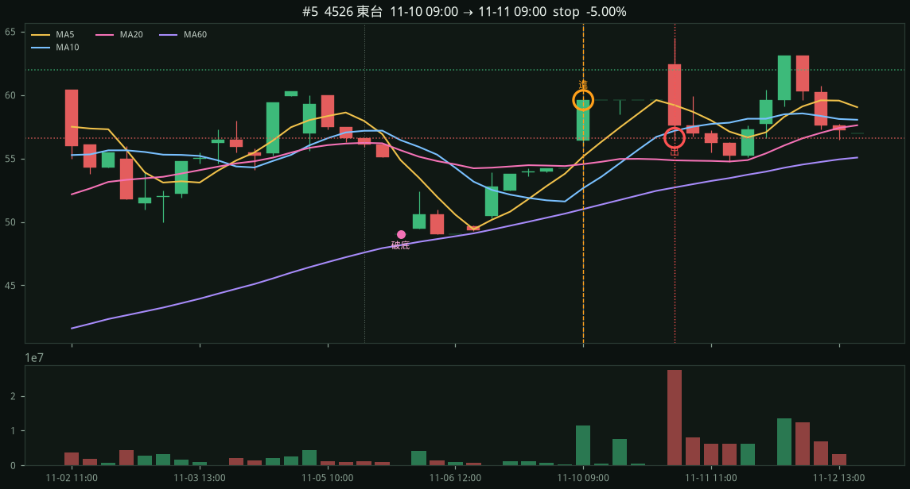
entry 54.20 stop 51.49 (−2.71) target 56.37 exit 56.37 target +2.17 破底 46.05 @ 11-04 11:00 站回 11-04 13:00 MA5 50.28 / MA10 47.82 / MA20 47.41 fwd +1d -0.37% +3d +7.56% +5d —
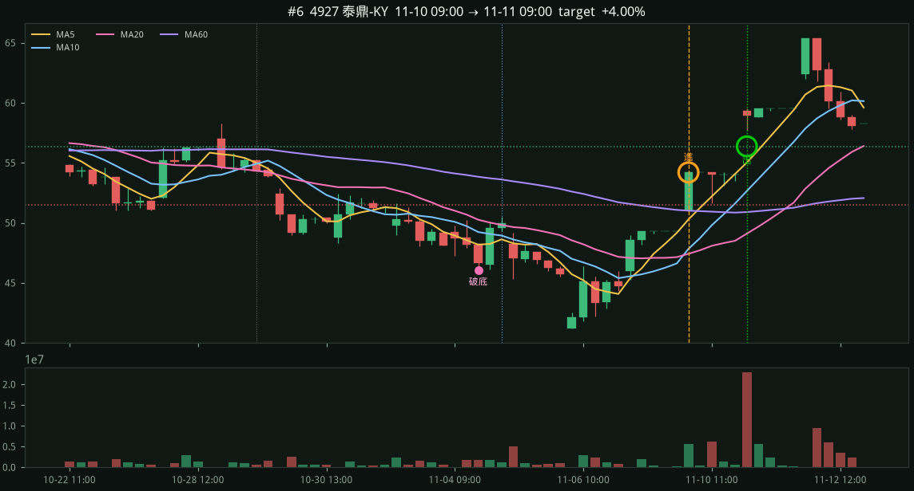
entry 239.00 stop 227.05 (−11.95) target 248.56 exit 228.00 open -11.00 破底 190.50 @ 11-06 09:00 站回 11-09 10:00 MA5 221.80 / MA10 212.30 / MA20 213.85 fwd +1d -2.72% +3d -4.60% +5d —
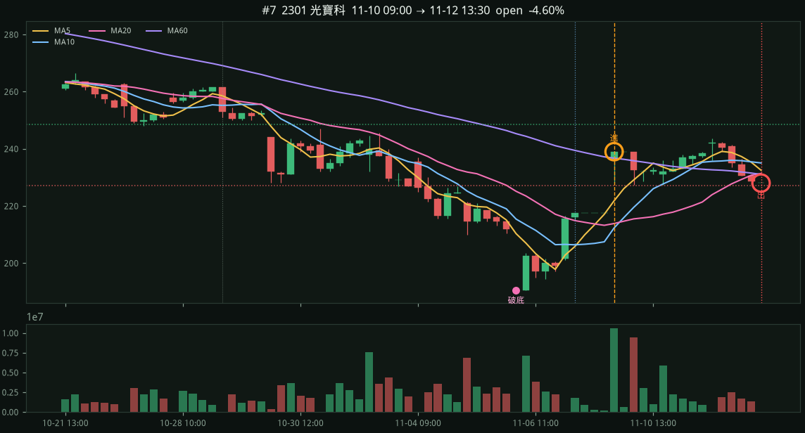
entry 78.60 stop 74.67 (−3.93) target 81.74 exit 81.74 target +3.14 破底 58.50 @ 11-06 09:00 站回 11-09 09:00 MA5 72.92 / MA10 69.25 / MA20 68.08 fwd +1d +0.00% +3d -2.67% +5d —
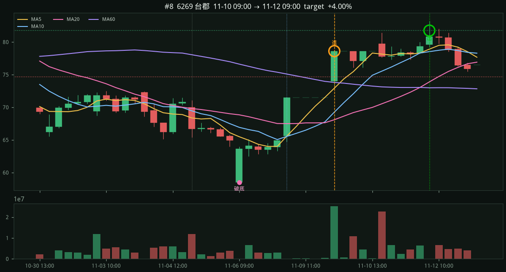
entry 620.00 stop 589.00 (−31.00) target 644.80 exit 644.80 target +24.80 破底 489.00 @ 11-06 09:00 站回 11-09 09:00 MA5 575.20 / MA10 549.60 / MA20 555.20 fwd +1d +0.00% +3d +10.81% +5d —
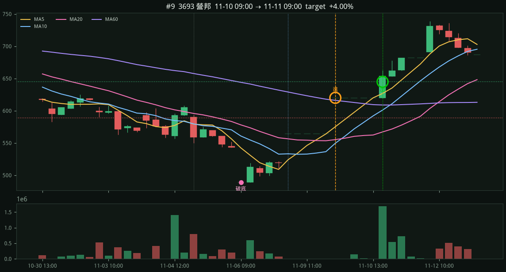
entry 95.00 stop 90.25 (−4.75) target 98.80 exit 98.80 target +3.80 破底 72.50 @ 11-06 09:00 站回 11-09 10:00 MA5 87.80 / MA10 84.07 / MA20 84.13 fwd +1d +0.00% +3d +7.89% +5d —
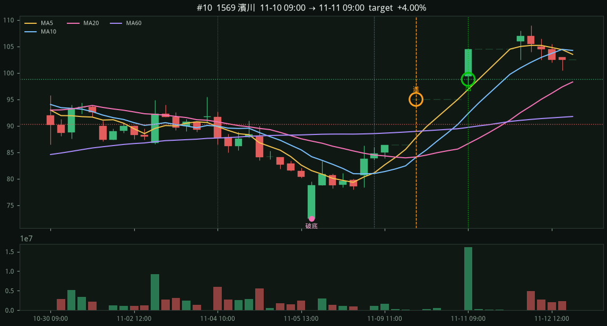
entry 71.80 stop 68.21 (−3.59) target 74.67 exit 68.21 stop -3.59 破底 58.90 @ 11-06 09:00 站回 11-09 09:00 MA5 69.48 / MA10 66.90 / MA20 66.77 fwd +1d -2.79% +3d -4.87% +5d —
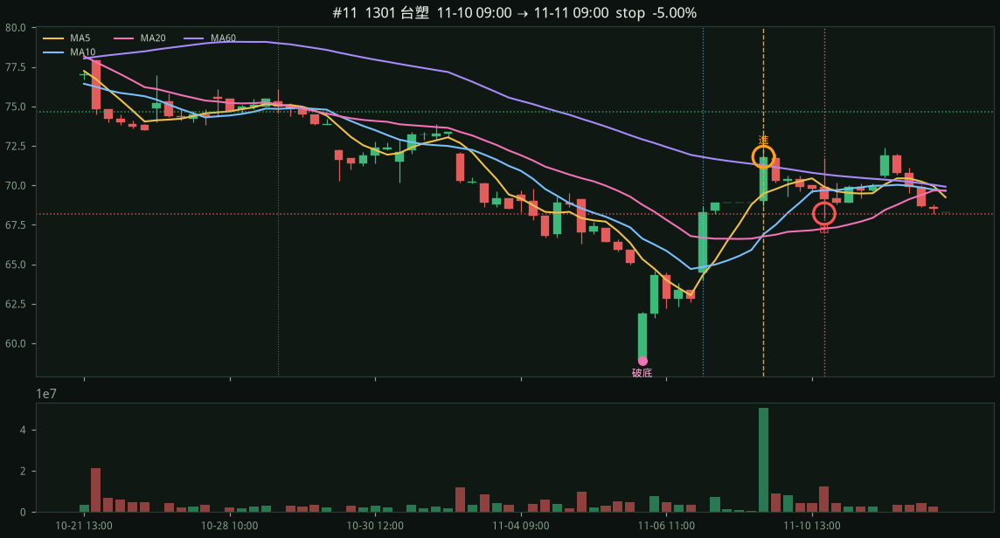
entry 203.50 stop 194.50 (−9.00) target 210.70 exit 210.70 target +7.20 破底 194.50 @ 10-30 10:00 站回 11-02 09:00 MA5 188.70 / MA10 180.75 / MA20 185.05 fwd +1d +0.00% +3d +5.65% +5d —
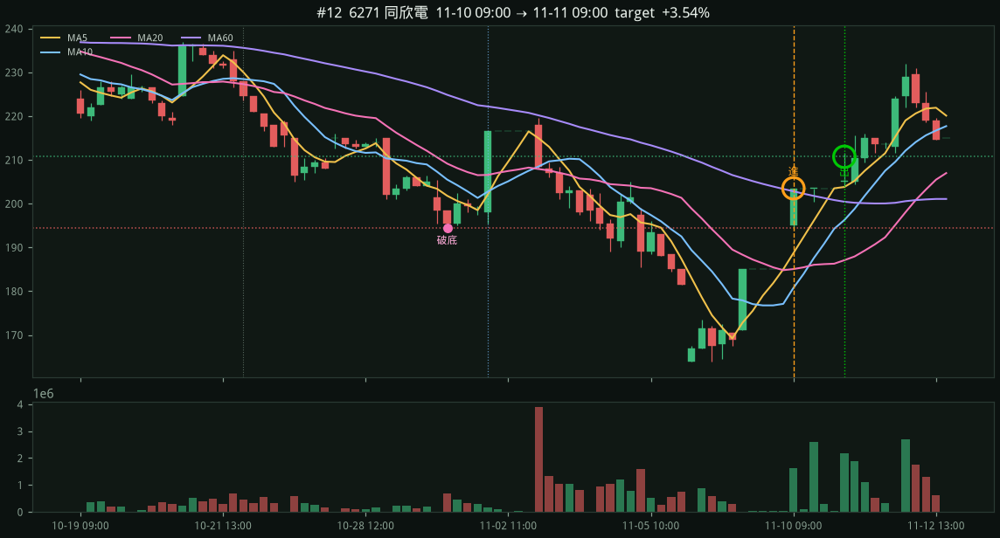
entry 72.80 stop 69.16 (−3.64) target 75.71 exit 71.20 open -1.60 破底 58.90 @ 11-06 09:00 站回 11-09 09:00 MA5 69.68 / MA10 67.17 / MA20 66.93 fwd +1d -1.92% +3d -2.20% +5d —
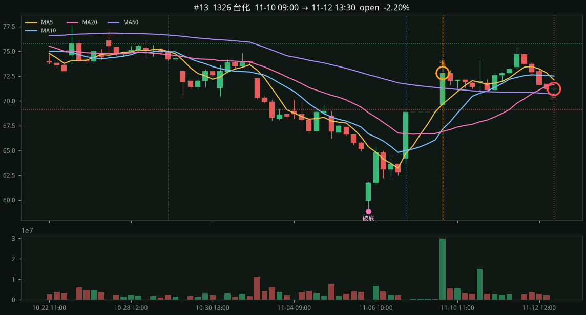
entry 26.80 stop 25.46 (−1.34) target 27.87 exit 27.87 target +1.07 破底 22.45 @ 11-06 09:00 站回 11-09 10:00 MA5 25.50 / MA10 24.68 / MA20 25.29 fwd +1d -4.29% +3d +4.48% +5d —
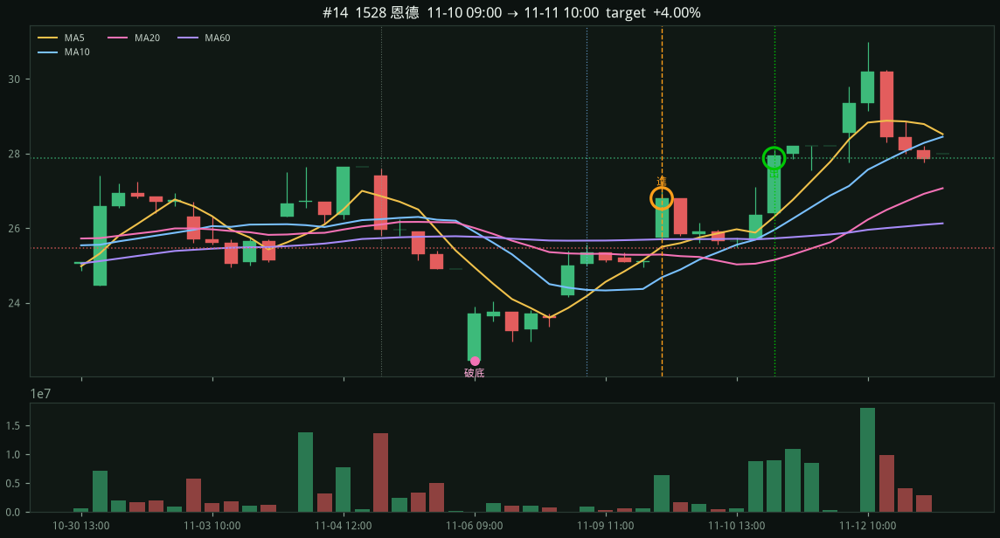
entry 57.50 stop 54.62 (−2.88) target 59.80 exit 59.80 target +2.30 破底 47.20 @ 11-06 09:00 站回 11-09 09:00 MA5 53.34 / MA10 51.12 / MA20 52.41 fwd +1d +0.00% +3d +20.87% +5d —
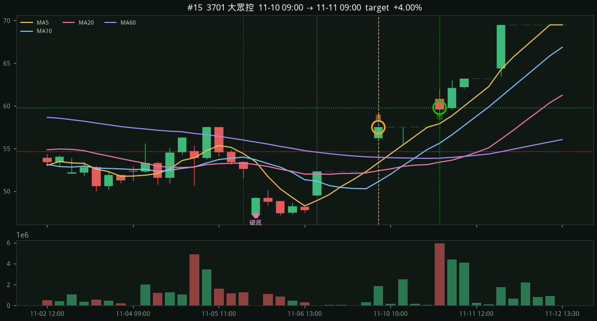
entry 520.00 stop 494.00 (−26.00) target 540.80 exit 540.80 target +20.80 破底 395.00 @ 11-06 09:00 站回 11-09 13:00 MA5 482.70 / MA10 467.45 / MA20 446.85 fwd +1d +0.00% +3d — +5d —
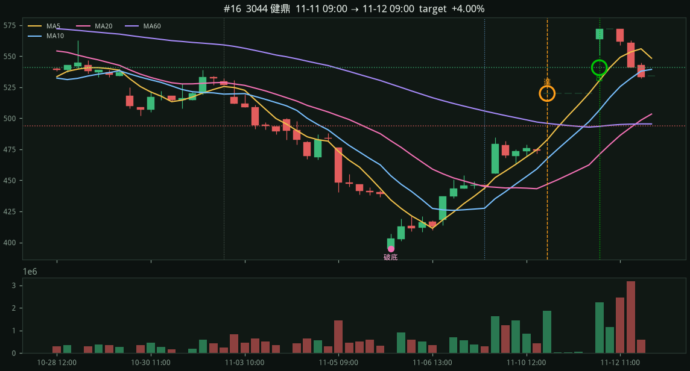
entry 130.50 stop 123.97 (−6.53) target 135.72 exit 135.72 target +5.22 破底 93.20 @ 11-06 09:00 站回 11-09 09:00 MA5 121.30 / MA10 115.95 / MA20 108.38 fwd +1d +0.00% +3d — +5d —
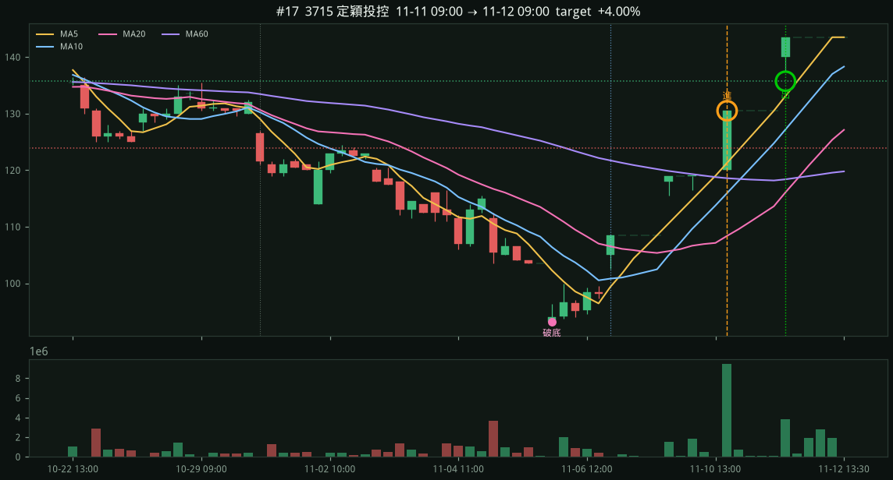
entry 92.60 stop 87.97 (−4.63) target 96.30 exit 96.30 target +3.70 破底 75.40 @ 11-09 09:00 站回 11-10 12:00 MA5 87.56 / MA10 83.73 / MA20 83.63 fwd +1d +0.00% +3d — +5d —
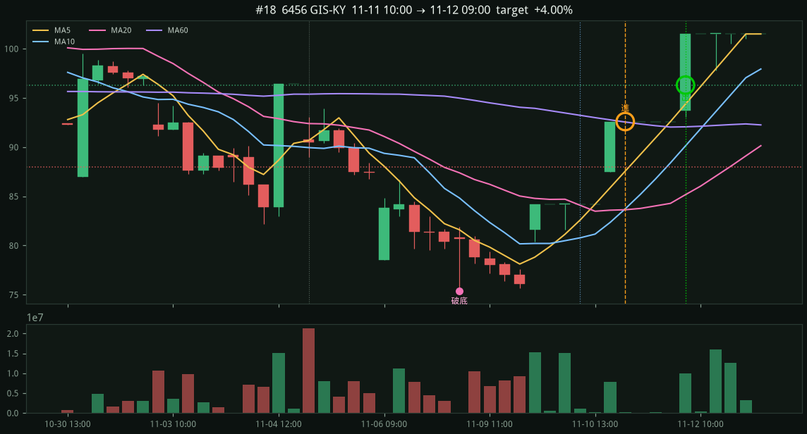
entry 520.00 stop 494.00 (−26.00) target 540.80 exit 540.80 target +20.80 破底 403.50 @ 11-09 09:00 站回 11-10 09:00 MA5 492.50 / MA10 481.05 / MA20 454.23 fwd +1d -0.58% +3d — +5d —
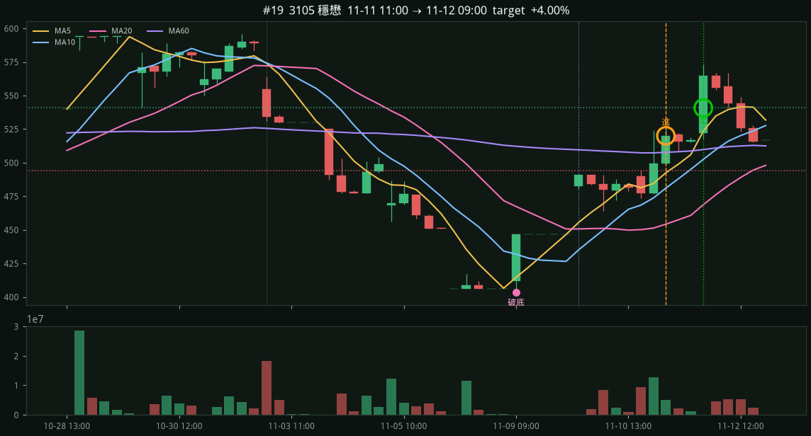
entry 466.50 stop 443.17 (−23.33) target 485.16 exit 485.16 target +18.66 破底 362.50 @ 11-06 09:00 站回 11-09 10:00 MA5 430.60 / MA10 420.75 / MA20 402.18 fwd +1d +0.00% +3d — +5d —
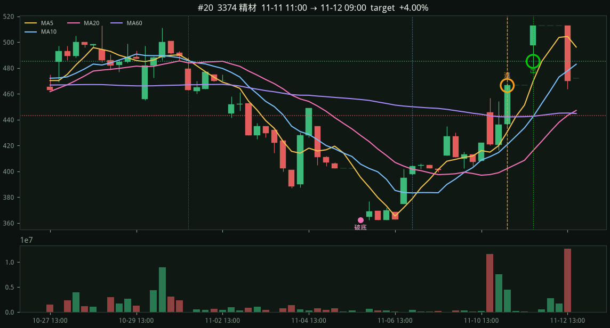
entry 540.00 stop 513.00 (−27.00) target 561.60 exit 561.60 target +21.60 破底 493.50 @ 11-03 12:00 站回 11-04 09:00 MA5 511.60 / MA10 508.45 / MA20 488.07 fwd +1d -2.96% +3d — +5d —
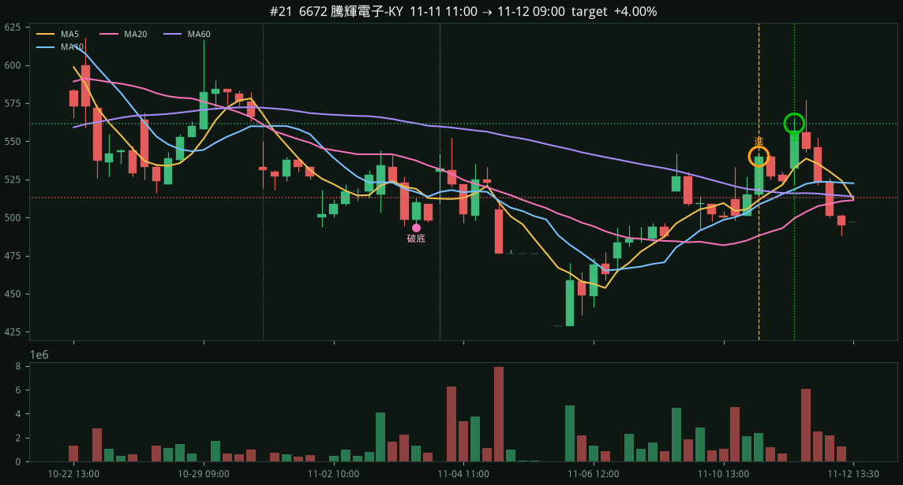
entry 31.80 stop 30.21 (−1.59) target 33.07 exit 33.07 target +1.27 破底 26.70 @ 11-06 09:00 站回 11-09 09:00 MA5 30.12 / MA10 30.21 / MA20 29.37 fwd +1d +0.00% +3d — +5d —
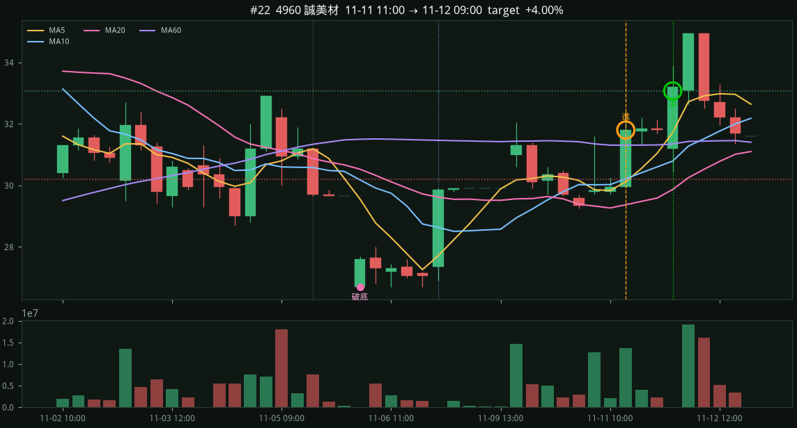
entry 314.50 stop 298.77 (−15.73) target 327.08 exit 327.08 target +12.58 破底 256.50 @ 11-06 09:00 站回 11-09 09:00 MA5 302.60 / MA10 297.30 / MA20 289.98 fwd +1d -0.64% +3d — +5d —
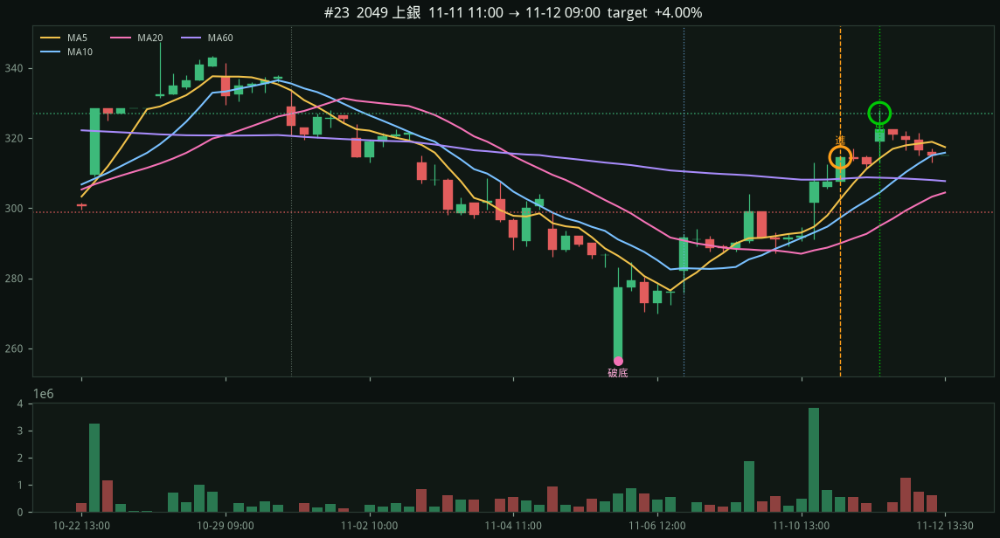
entry 395.50 stop 375.72 (−19.78) target 411.32 exit 411.32 target +15.82 破底 306.50 @ 11-06 09:00 站回 11-10 09:00 MA5 380.70 / MA10 372.50 / MA20 348.20 fwd +1d -0.25% +3d — +5d —
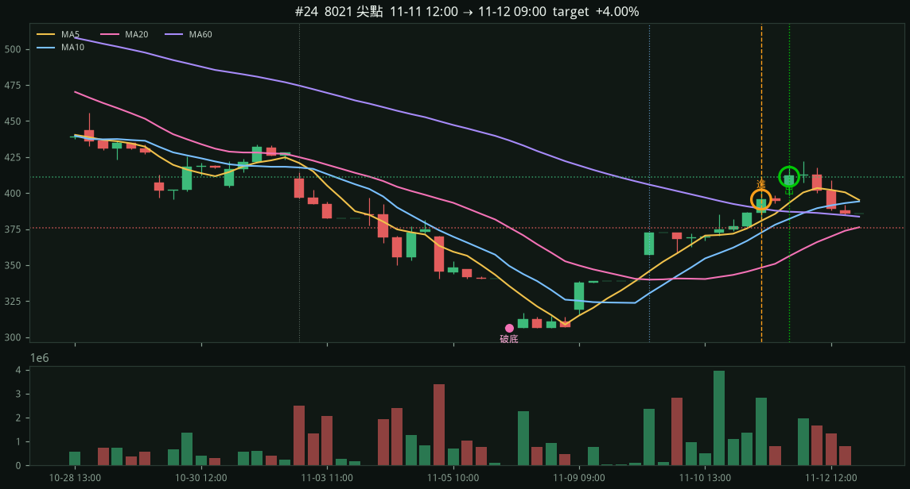
entry 157.50 stop 152.00 (−5.50) target 161.90 exit 159.00 open +1.50 破底 152.00 @ 11-04 09:00 站回 11-05 09:00 MA5 154.70 / MA10 153.95 / MA20 152.68 fwd +1d +0.00% +3d — +5d —
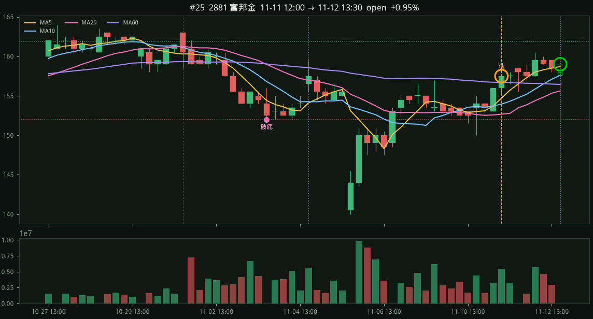
entry 70.90 stop 67.36 (−3.55) target 73.74 exit 71.90 open +1.00 破底 62.20 @ 11-06 09:00 站回 11-09 09:00 MA5 70.08 / MA10 69.66 / MA20 69.12 fwd +1d +1.41% +3d — +5d —
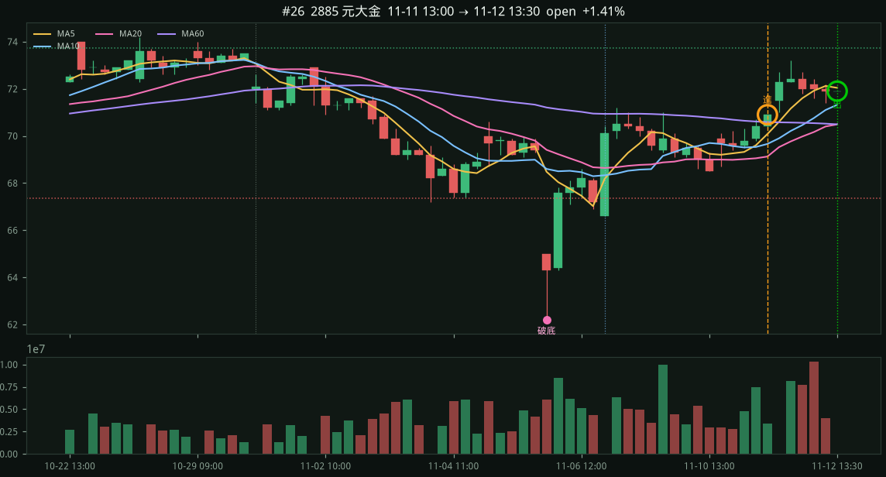
entry 467.50 stop 444.12 (−23.38) target 486.20 exit 444.12 stop -23.38 破底 371.00 @ 11-06 09:00 站回 11-09 12:00 MA5 454.90 / MA10 448.40 / MA20 429.32 fwd +1d -6.52% +3d — +5d —
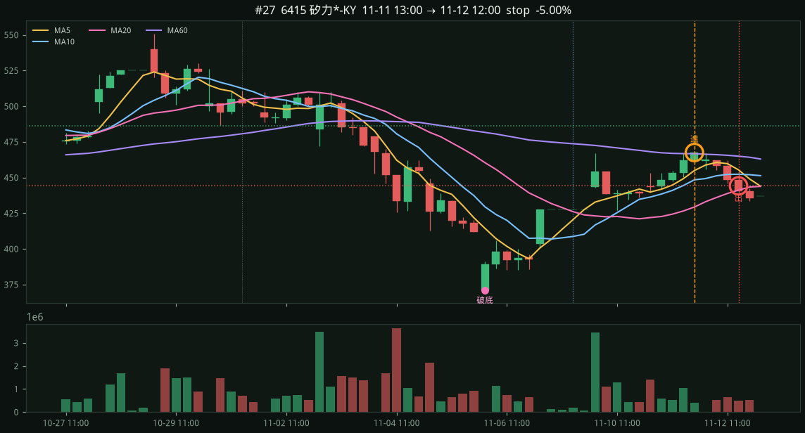
entry 42.45 stop 40.33 (−2.12) target 44.15 exit 40.33 stop -2.12 破底 34.20 @ 11-06 09:00 站回 11-09 09:00 MA5 40.62 / MA10 39.92 / MA20 39.19 fwd +1d -8.48% +3d — +5d —
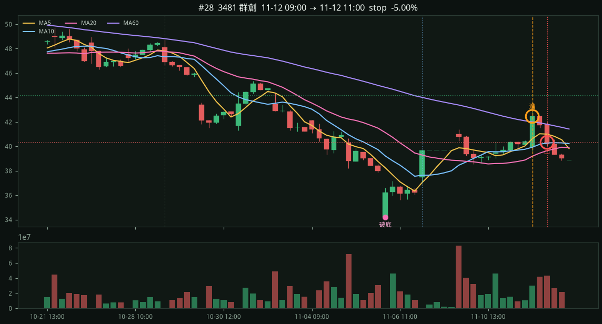
entry 180.50 stop 171.47 (−9.03) target 187.72 exit 171.47 stop -9.03 破底 152.00 @ 11-06 09:00 站回 11-09 09:00 MA5 174.60 / MA10 172.25 / MA20 169.65 fwd +1d -5.82% +3d — +5d —
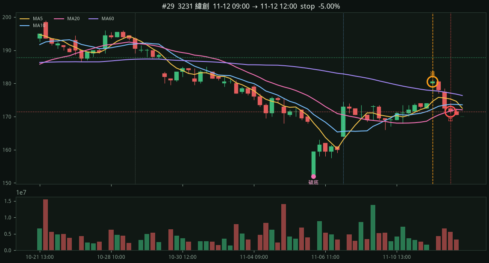
entry 252.00 stop 239.40 (−12.60) target 262.08 exit 240.50 open -11.50 破底 198.00 @ 11-06 09:00 站回 11-09 11:00 MA5 242.40 / MA10 236.30 / MA20 226.60 fwd +1d -4.56% +3d — +5d —
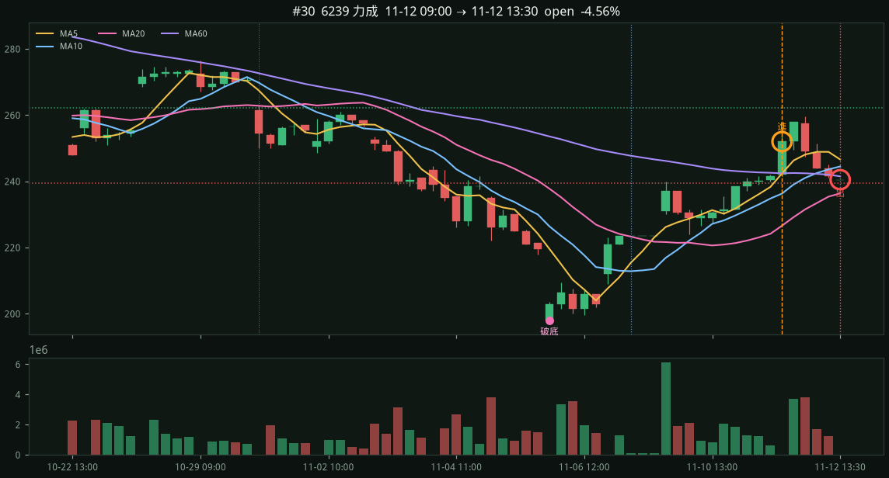
entry 113.00 stop 107.35 (−5.65) target 117.52 exit 112.00 open -1.00 破底 101.00 @ 11-06 09:00 站回 11-09 09:00 MA5 111.40 / MA10 110.75 / MA20 110.40 fwd +1d -0.88% +3d — +5d —
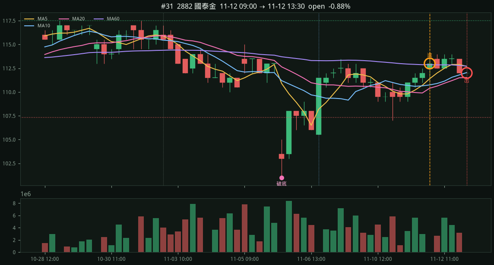